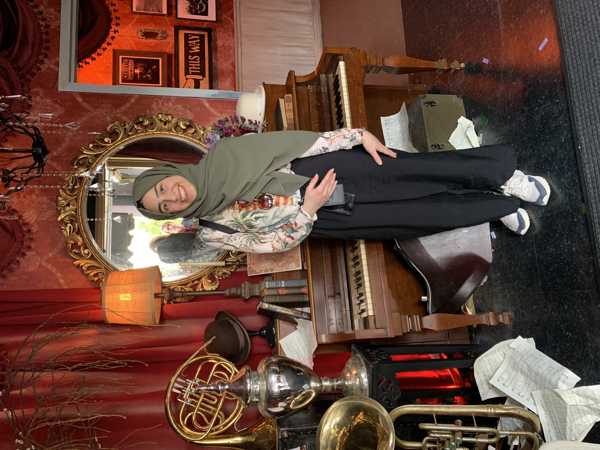

My Trip to Florida
My first time in Florida was long time ago when I was 14, and I since then I have always wanted to go again. So, last semester when spring break was coming and my friend and I wanted to travel, so I suggested to go to Florida, she liked the idea because we both wanted a trip with lots of fun and Florida is the city of fun I guess, because of the Disney World and Universal Studios. We went there for 5 days, on the second day we went to Universal Studios Park, I was disappointed to see The Simpson ride was gone, other than that we had so much fun exploring new rides, there was a new ride staring Jimmy Fallon, is was really fun. Harry Potter rides never gets old and always exciting. It was very enjoying when we got tired and decided to take ice-cream breaks and watch Marilyn Monroe dancing show at the same time. One of the funny stories we came through when we were there, when we were on the half way through the Spider Man ride it shot down, but it was very nice that the helping crew gave us a Fast Pass ticket as an apology for the inconvenience.
| Day | Location | Enjoyed? |
| 1 | Florida Mall | Normal |
| 2 | Universal Studios | Yes |
| 3 | Island's of Adventure | Yes |
| 4 | Epcot Disney | No |
| 5 | The Cheesecake Factory | Yes |

My Trip to Wisconsin
I went to Wisconsin last July to visit 5 of my friends. I have a friend who went to same high school with me, her cousin also was also there which she is also my friend, two friends I met in Michigan, and lastly my friend from middle school. I stayed with my friends Raghad and Raneem, we had so much fun eating healthy food which is something I almost never do, thanks to Raghad she is the healthiest person I have ever known, and always try to influence me and Raneem to do so but the ice-cream beat our will. A funny story happened there, the three of us went to a cake store suggested by Raghad, and while we were there, she took me a side and told me to buy Raneem a birthday cake for an early birthday party, and I liked the idea. So, while the three of us were looking at the cakes and trying to pick one, we asked Raneem which one she liked the most, and she chooses the berry cake, and we all agreed that it looks delicious. Then, after we told the waiter the cake we would like to get, I did a stupid thing at the checkout by whispering to the waiter if there was a possibility to write on the cake “Happy Birthday”. While that was happening Raneem felt something was going on and that we were throwing her an early birthday party, but she was happy anyway.